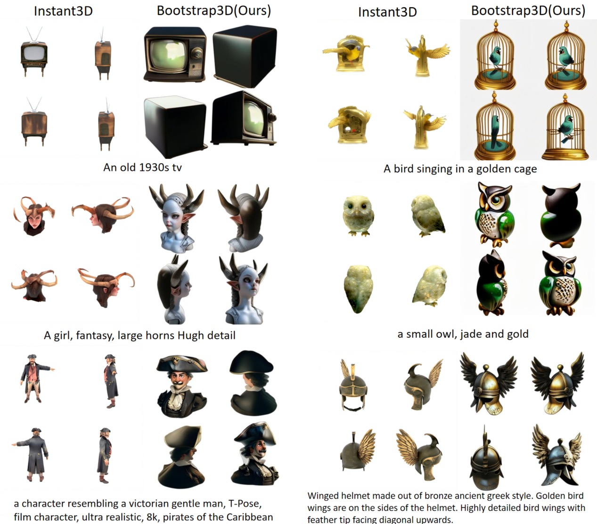

Bootstrap3D: Improving 3D Content Creation with Synthetic Data
Bootstrap3D: Improving 3D Content Creation with Synthetic Data
Zeyi Sun1,3, Tong Wu2, Pan Zhang3, Yuhang Zang3, Xiaoyi Dong3, Yuanjun Xiong3, Dahua Lin2,3 Jiaqi Wang3,
1 Shanghai Jiao Tong University, 2 The Chinese University of Hong Kong, 3 Shanghai AI Laboratory, 4 MThreads, Inc.
Abstract
Recent years have witnessed remarkable progress in multi-view diffusion models for 3D content creation. However, there remains a significant gap in image quality and prompt-following ability compared to 2D diffusion models. A critical bottleneck is the scarcity of high-quality 3D assets with detailed captions. To address this challenge, we propose Bootstrap3D, a novel framework that automatically generates an arbitrary quantity of multi-view images to assist in training multi-view diffusion models. Specifically, we introduce a data generation pipeline that employs (1) 2D and video diffusion models to generate multi-view images based on constructed text prompts, and (2) our fine-tuned 3D-aware MV-LLaVA for filtering high-quality data and rewriting inaccurate captions. Leveraging this pipeline, we have generated 1 million high-quality synthetic multi-view images with dense descriptive captions to address the shortage of high-quality 3D data. Furthermore, we present a Training Timestep Reschedule (TTR) strategy that leverages the denoising process to learn multi-view consistency while maintaining the original 2D diffusion prior. Extensive experiments demonstrate that Bootstrap3D can generate high-quality multi-view images with superior aesthetic quality, image-text alignment, and maintained view consistency.
Generated gaussian given text prompts
Generated gaussian given text prompts. With the help of GRM as sparse view reconstruction model, Bootstrap3D can achieve fast text-to-3D with enhanced object-text alignment and diversity compared to only training on Objaverse.
Generated multi-view image compared to Instant3D
Generated multi-view image compared to Instant3D. Text prompts are collected from meshy by web users. Through finetuning multi-view diffusion model on synthetic data with rewrited dense caption, Bootstrap3D can achieve great text control in real user cases.
Data Generation Pipeline

Data generation pipeline consists of 1) using LLM to generate diverse text prompts 2) employing the T2I model to generate single-view images 3) synthesizing arbitrary number of multi-view images by applying the video diffusion model, 4) employing MV-LLaVA to filter and select only high-quality data, and rewrite captions to be dense and descriptive.
Citation
@misc{fang2024makeitreal,
title={Make-it-Real: Unleashing Large Multimodal Model's Ability for Painting 3D Objects with Realistic Materials},
author={Ye Fang and Zeyi Sun and Tong Wu and Jiaqi Wang and Ziwei Liu and Gordon Wetzstein and Dahua Lin},
year={2024},
eprint={2404.16829},
archivePrefix={arXiv},
primaryClass={cs.CV}
}